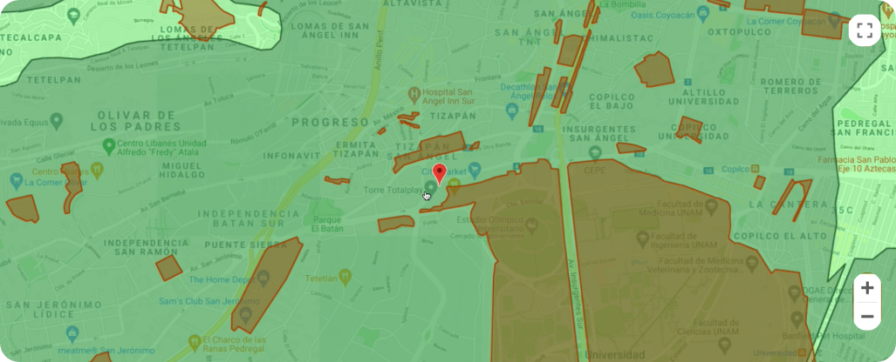

<app-header-actions
  [title]="'Cargar Sitios'"
  [hasBackButton]="false"
  [hidenCreateOportunity]="true"
>
</app-header-actions>
<div class="d-flex justify-content-center align-items-center">
  <div class="input-group w-50 shadow-sm">
    <input
      type="text"
      class="form-control search-bar"
      placeholder="Añade tu sitio(s) buscando la dirección o coordenada"
      aria-label="Añade tu sitio(s) buscando la dirección o coordenada"
      aria-describedby="basic-addon2"
      matInput
      [formControl]="searchData"
      [matAutocomplete]="auto"
      (keydown.enter)="search()"
    />
    <button
      class="btn-clear-search"
      *ngIf="selectedIdOption"
      matSuffix
      mat-icon-button
      aria-label="Clear"
      (click)="clearSearch()"
    >
      <mat-icon class="icon-clear-search">close</mat-icon>
    </button>
    <mat-autocomplete autoActiveFirstOption #auto="matAutocomplete">
      <mat-option
        (click)="setSearchId(option.id)"
        *ngFor="let option of filteredOptions | async"
        [value]="option.name + ' ' + option.location + ' ' + option.type"
      >
        {{ option.name }} {{ option.location }}
        <small class="small-type">{{ option.type }}</small>
      </mat-option>
    </mat-autocomplete>

    <div class="search-bar-divider">
      <span class="search-bar-span">&nbsp;</span>
    </div>
    <button
      class="btn btn-outline-secondary pt-2 search-bar search-bar-btn"
      id="basic-addon2"
      (click)="search()"
    >
      <mat-icon class="search-icon">search</mat-icon>
    </button>
  </div>
  <button type="button" [disabled]="selectedIdOption == 0" class="btn-add">
    Agregar
  </button>
</div>
<div class="row mt-5">
  <div class="col-9">
    
  </div>
  <div class="col-3">
    <mat-list role="list" id="matListSites">
      <mat-list-item role="listitem">
        <mat-icon id="itemIcon1">circle</mat-icon> Microonda</mat-list-item
      >
      <mat-list-item role="listitem">
        <mat-icon id="itemIcon2">circle</mat-icon> Red Gpon</mat-list-item
      >
      <mat-list-item role="listitem">
        <mat-icon id="itemIcon3">circle</mat-icon> Restricción técnica
      </mat-list-item>
      <mat-list-item role="listitem">
        <mat-icon id="itemIcon4">circle</mat-icon> Zona de alto riesgo
      </mat-list-item>
      <mat-list-item role="listitem">
        <mat-icon id="itemIcon5">circle</mat-icon> Zona en construcción
        Microonda
      </mat-list-item>
      <mat-list-item role="listitem">
        <mat-icon id="itemIcon6">circle</mat-icon> Superposición Red Gpon/
        Microonda</mat-list-item
      >
      <mat-list-item role="listitem">
        <mat-icon id="itemIcon7">circle</mat-icon> Superposición Red Gpon/
        Construcción Microonda</mat-list-item
      >
    </mat-list>
  </div>
</div>
<div class="mt-2"></div>
